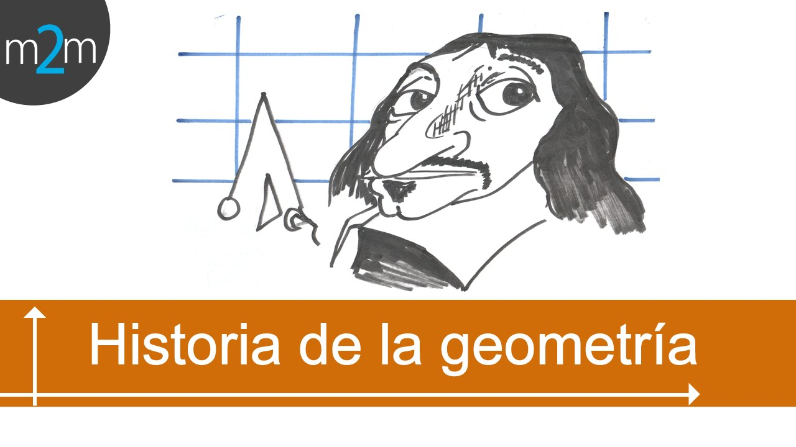

Historia de la Geometria
La geometría es una de las ciencias más antiguas. Inicialmente, constituía un cuerpo de conocimientos prácticos en relación con las longitudes, áreas y volúmenes. La civilización babilónica fue una de las primeras culturas en incorporar el estudio de la geometría. La invención de la rueda abrió el camino al estudio de la circunferencia y posteriormente al descubrimiento del número π (pi); También desarrollaron el sistema sexagesimal, al conocer que cada año cuenta con 365 días, además implementaron una fórmula para calcular el área del trapecio rectángulo.1 En el antiguo Egipto estaba muy desarrollada, según los textos de Heródoto, Estrabón y Diodoro Sículo. Euclides, en el siglo III a. C. configuró la geometría en forma axiomática y constructiva,2 tratamiento que estableció una norma a seguir durante muchos siglos: la geometría euclidiana descrita en Los Elementos. El estudio de la astronomía y la cartografía, tratando de determinar las posiciones de estrellas y planetas en la esfera celeste, sirvió como importante fuente de resolución de problemas geométricos durante más de un milenio. René Descartes desarrolló simultáneamente el álgebra de ecuaciones y la geometría analítica, marcando una nueva etapa, donde las figuras geométricas, tales como las curvas planas, podrían ser representadas analíticamente, es decir, con funciones y ecuaciones. La geometría se enriquece con el estudio de la estructura intrínseca de los entes geométricos que analizan Euler y Gauss, que condujo a la creación de la topología y la geometría diferencial.
La geometria como una de las artes liberales y euclides
Geometria antigüa
Babilonia
La Civilización Babilónica se les atribuye la invención de la rueda, es por eso que además se les otorga su contribución a la investigación de la longitud de las circunferencias en relación con su diámetro, siendo este el número 3, este descubrimiento permitió a los Babilonios considerar que la longitud de las circunferencias era un valor intermedio entre los perímetros de los cuadrados inscrito y circunscrito en una circunferencia. Mediante el uso de la astronomía, ya que el año se dividía 360 días establecieron que la circunferencia se dividía en 360 partes, obteniendo el grado sexagesimal. Se les atribuye el conocimiento de cómo trazar un hexágono regular inscrito, además de hallar el área del trapecio rectángulo
Egipto
La geometría egipcia es la geometría desarrollada en el Antiguo Egipto. La geometría egipcia estaba muy desarrollada, como admitieron Heródoto, Estrabón y Diodoro, que aceptaban que los egipcios habían «inventado» la geometría y la habían enseñado a los griegos; aunque lo único que ha perdurado son algunas fórmulas –o, mejor dicho, algoritmos expresados en forma de «receta»– para calcular volúmenes, áreas y longitudes, cuya finalidad era práctica. Con ellas se pretendía, por ejemplo, calcular la dimensión de las parcelas de tierra, para reconstruirlas después de las inundaciones anuales. De allí el nombre γεωμετρία, geometría: «medición de la tierra» (de γῆ (gê) 'tierra' más μετρία (metría), 'medición').
Al igual que la aritmética, la geometría era una ciencia eminentemente práctica que ofrecía soluciones concretas a diversos problemas. Gran parte fue desarrollada por los escribas, funcionarios instruidos y cultos del antiguo Egipto que recibían lecciones de cálculo y escritura. Registraban el nivel del río Nilo (nilómetros), la producción de las cosechas, su almacenamiento, realizaban censos de población y ganado, registros de importación y exportación, etc. La necesidad de volver a marcar los límites de los terrenos de cultivo al bajar el nivel del agua del Nilo, después de las inundaciones anuales, impulsó el desarrollo de la geometría y los instrumentos de medición para el cálculo de áreas, volúmenes e incluso del tiempo.
Los papiros de textos de matemática que han perdurado, destinados a la educación de los escribas, no dan justificación alguna de los métodos de cálculo empleados, limitándose a explicar las operaciones que hay que realizar. El Papiro de Ahmes y el Papiro de Moscú muestran conjuntos de métodos prácticos para obtener diversas áreas y volúmenes, destinados al aprendizaje de escribas. Es discutible si estos documentos implican profundos conocimientos o representan en cambio todo el conocimiento que los antiguos egipcios tenían sobre la geometría.
Los historiadores antiguos nos relataron que el conocimiento de esta civilización sobre geometría –así como los de las culturas mesopotámicas– pasó íntegramente a la cultura griega a través de Tales de Mileto, los pitagóricos y, esencialmente, de Euclides. La ecuación numérica, anticipo del teorema de Pitágoras, 32 + 42 = 52, es posible invención de los antiguos egipcios. También dan una aproximación para π/4 mediante (8/9)2, tal vez obtenida de una transformación aproximada del octante en un triángulo rectángulo isósceles.3
Geometria medieval
Durante los siguientes siglos la Matemática comienza nuevos caminos de la mano de hindúes y árabes en Trigonometría y Álgebra (el uso de la notación posicional y del cero), aunque relacionadas con la Astronomía y la Astrología; pero en geometría apenas hay nuevas aportaciones. En Occidente, a pesar de que la Geometría es una de las siete Artes liberales (encuadrada en el Quadrivium), las escuelas y universidades se limitan a enseñar los "Elementos", y no hay aportaciones.
Geometria proyectiva
Es en el Renacimiento cuando las nuevas necesidades de representación del arte y de la técnica empujan a ciertos humanistas a estudiar propiedades geométricas para obtener nuevos instrumentos que les permitan representar la realidad. Aquí se enmarca la figura del matemático y arquitecto Luca Pacioli, de Leonardo da Vinci, de Alberto Durero, de Leone Battista Alberti, de Piero della Francesca, por citar solo algunos. Todos ellos, al descubrir la perspectiva y la sección, crean la necesidad de sentar las bases formales en la que cimentar las nuevas formas de Geometría que ésta implica: la Geometría proyectiva, cuyos principios fundamentales aparecen de la mano de Desargues en el siglo XVII. Esta nueva geometría de Desargues fue estudiada ampliamante ya por Pascal o por de la Hire, pero debido al interés suscitado por la Geometría Cartesiana y sus métodos, no alcanzó tanta difusión como merecía hasta la llegada a principios del siglo XIX de Gaspard Monge en primer lugar y sobre todo de Poncelet.
Geometria cartesiana

Pero es sin duda la aparición de la geometría analítica lo que marca la Geometría en la Edad Moderna. Descartes propone un nuevo método de resolver problemas geométricos, y por extensión, de investigar en geometría. El nuevo método analiza la geometría utilizando ecuaciones algebraicas. Se cambia la regla y compás clásicos por expresiones numéricas que se pueden representar mediante coordenadas cartesianas. Utilizando notación actual, dicho método se expresa así: En un plano se trazan dos rectas perpendiculares (ejes) –que por convenio se trazan de manera que una de ellas sea horizontal y la otra vertical–, y cada punto del plano queda unívocamente determinado por las distancias de dicho punto a cada uno de los ejes, siempre y cuando se dé también un criterio para determinar sobre qué semiplano determinado por cada una de las rectas hay que tomar esa distancia, criterio que viene dado por un signo. Ese par de números, las coordenadas, quedará representado por un par ordenado {\displaystyle (x,y)}(x,y), siendo {\displaystyle x}x la distancia a uno de los ejes (por convenio será la distancia al eje vertical) e {\displaystyle y}y la distancia al otro eje (al horizontal).